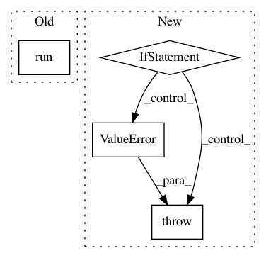

f13ab967ea8c284a67fa2d5c8a3f0e585910c258,testing/kfctl/kfctl_go_test.py,,test_build_kfctl_go,#Any#Any#Any#Any#Any#,164
Before Change
cwd=app_path)
// Do not run with retries since it masks errors
util.run([kfctl_path, "apply", "-V", "all"], cwd=app_path)
verify_kubeconfig(app_path)
if __name__ == "__main__":
After Change
logging.info("Using app path %s", app_path)
zone = "us-central1-a"
os.environ["ZONE"] = zone
if not zone:
raise ValueError("Could not get zone being used")
// We need to specify a valid email because
// 1. We need to create appropriate RBAC rules to allow the current user
// to create the required K8s resources.
// 2. Setting the IAM policy will fail if the email is invalid.
email = util.run(["gcloud", "config", "get-value", "account"])
os.environ["EMAIL"] = email
if not email:
raise ValueError("Could not determine GCP account being used.")
os.environ["PROJECT"] = project
if not project:
raise ValueError("Could not get project being used")
// username and password are passed as env vars and won"t appear in the logs
//
config_spec = get_config_spec(config_path, project, email)
In pattern: SUPERPATTERN
Frequency: 3
Non-data size: 4
Instances
Project Name: kubeflow/kubeflow
Commit Name: f13ab967ea8c284a67fa2d5c8a3f0e585910c258
Time: 2019-10-03
Author: adhita94@gmail.com
File Name: testing/kfctl/kfctl_go_test.py
Class Name:
Method Name: test_build_kfctl_go
Project Name: NervanaSystems/coach
Commit Name: 5fadb9c18e3de16cc5633175199f9e9e2c381102
Time: 2018-11-07
Author: sina.beh@gmail.com
File Name: rl_coach/graph_managers/graph_manager.py
Class Name: GraphManager
Method Name: restore_checkpoint
Project Name: ray-project/ray
Commit Name: 57544b1ff9f97d4da9f64d25c8ea5a3d8d247ffc
Time: 2020-05-11
Author: sven@anyscale.io
File Name: rllib/examples/rock_paper_scissors_multiagent.py
Class Name:
Method Name: run_heuristic_vs_learned